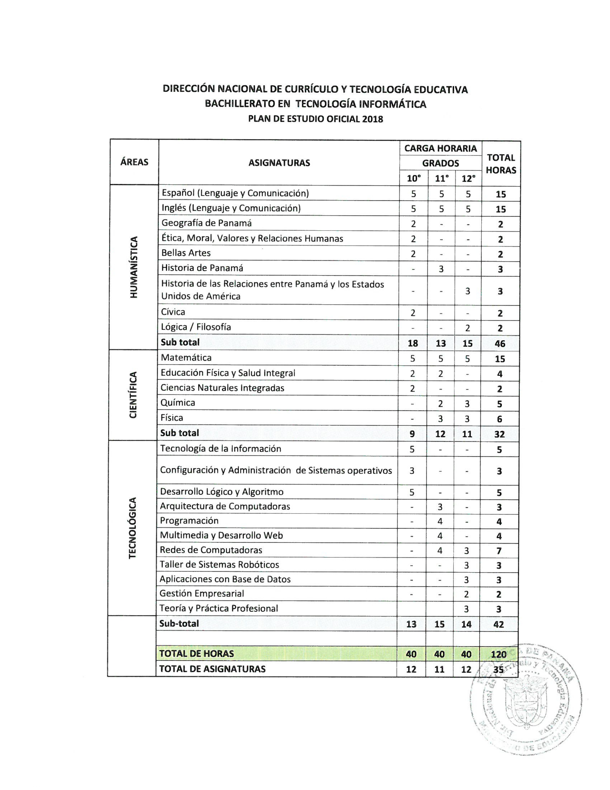

Bachiller en Informática
El Bachillerato en Informática del Instituto Profesional y Técnico Don Bosco prepara a los estudiantes para integrarse de manera competente al mundo de las tecnologías de la información. A lo largo del bachiller, los alumnos adquieren fundamentos sólidos en programación, redes, sistemas operativos y desarrollo web, aplicados a entornos reales de trabajo.
El plan de estudios combina formación académica general con especialización técnica, permitiendo al egresado continuar estudios superiores o incorporarse al mercado laboral con habilidades concretas y actualizadas.
Perfil del Egresado
- ✅ Instala y administra sistemas operativos
- ✅ Desarrolla aplicaciones eficaces
- ✅ Diseña sitios web estáticos y dinámicos
- ✅ Administra bases de datos relacionales
- ✅ Configura redes de computadoras LAN
- ✅ Aplica lógica algorítmica
- ✅ Produce contenido digital multimedia
- ✅ Aplica principios de robótica
Plan de Estudios
